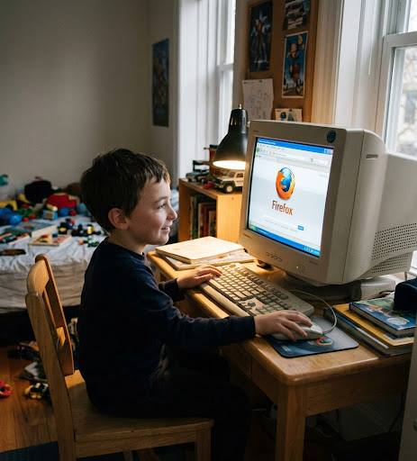

♻
Recycle Bin
My Documents

firefox_beta_testing.jpg
Mozilla Firefox
(Untitled) - Mozilla Firefox
×
F
ile
E
dit
V
iew
H
istory
B
ookmarks
T
ools
H
elp
←
→
▾
↻
×
◔
☆
▾
G
▣
Most Visited
▾
Getting Started
◔
Latest Headlines
▾
+
⌄
▲
▼
firefox_beta_testing.jpg - Windows Picture and Fax Viewer
×
B
Barron
Mozilla Firefox
Internet
✉
Outlook Express
E-mail
▤
Notepad
Plain text editor
📁
My Documents
🖥
My Computer
⚙
Control Panel
🔎
Search
▣
Run...